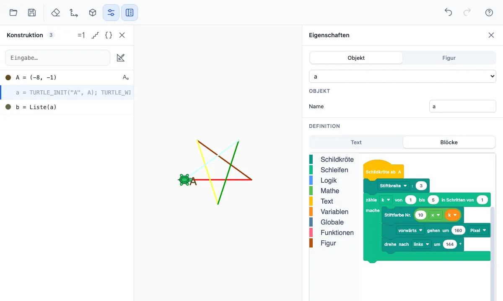

Ausdrücke und Schieberegler
Ausdrücke
Jede Zeile, die weder ein Punkt noch ein Befehl ist, erzeugt einen Ausdruck, oben links mit zwei Dezimalstellen angezeigt. Seine Art ergibt sich aus dem Text:
| Zeile | Art |
|---|---|
a = 3,
liste = [1, 2, 3]
|
Konstante |
t = "Hallo" |
Text |
f = 0.5x^2 - 4 |
Funktion von x (y, z, t); f(2) ruft
sie auf, f'(2) ihre Ableitung
|
f(x) = ax^2 + bx + c |
Kurve der Funktion, gezeichnet:
ax wird als a x gelesen, die
Schieberegler a, b, c werden erzeugt;
f(2) ruft sie ebenfalls auf
|
E = d(A, B) |
Messwert, neu berechnet, wenn sich die Figur bewegt |
u = "AB = " + round(d(A, B)*100)/100
|
berechneter Text |
In einer Formel steht ein Punkt für seine Koordinaten, eine Strecke für ihre Länge, ein Kreis für seinen Radius, ein Vieleck für seinen Flächeninhalt, ein Winkel für sein Maß. Vollständige Syntax: Formeln und Programme.
Ein Ausdruck wird durch Ziehen seines Textes verschoben; an einen Punkt geheftet, folgt er ihm. Antippen wählt ihn aus oder schreibt während einer Eingabe seinen Namen.
Schieberegler
r = Schieberegler(0, 5, 2): von 0 bis 5, Wert 2.
Die Grenzen dürfen Ausdrücke oder Formeln sein (Schieberegler(0, d(A, B), 1)). Schrittweite, Länge, Ausrichtung, Griff und Animation werden
in den
Eigenschaften
eingestellt. r = 5 macht daraus wieder eine
Konstante.
Ein unbekannter Name, der mit einem Kleinbuchstaben beginnt,
erzeugt einen Schieberegler von −5 bis 5, mit Schrittweite 0,1
und Wert 1: A = (a, 4),
d = y = m x + p. Ein griechischer Buchstabe erzeugt
einen Winkel von 0 bis 360°, mit Schrittweite 1° und Wert 45°
(von 0 bis 2π im Bogenmaß): P = (3; α). Eine
abgelehnte Zeile behält ihre Schieberegler nicht.
Berechnete Punkte
-
M = (x(B) + 1, y(A)): Koordinaten durch Formeln gegeben. -
N = Punkt(2*B - A): eine Formel, deren Wert ein Punkt ist. -
P = (3; 60°): Polarkoordinaten, Radius und Winkel.
Ist der Wert einer Zeile Name = Formel ein Punkt
oder eine Liste von Punkten, bieten Schaltflächen am Zeilenende
Punkt,
Liste von Punkten,
Liste von Strecken oder
Ausdruck an.
Eingabe nimmt die hervorgehobene Schaltfläche: Punkt
oder Liste bei einem großgeschriebenen Namen, sonst Ausdruck.
Daher liste = [1, 2, 3] und nicht
L = [1, 2, 3], was als Punkt im Raum gelesen würde.
Listen von Punkten
q = Liste(pts) zeichnet die Punkte des Ausdrucks
pts; ein undefinierter Punkt unterbricht die Linie.
Ein ausgewählter Ausdruck, dessen Wert eine Liste von Punkten
ist, bietet im Kontextbereich auch
und
an (und
bei einem Punkt als Wert): Die
Zeile wird geschrieben und der Ausdruck ausgeblendet.
Folgen
L = Folge((k, k^2), k, -2, 2) setzt die Punkte (k,
k²) für k von −2 bis 2 mit Schrittweite 1; ein fünftes Argument
gibt eine andere Schrittweite an. Das Element kann auch eine
Zahl sein, Strecke(P, Q),
Gerade(P, Q), Kreis(O, r) oder
Vieleck(A, B, C, …), deren Argumente Formeln in k
sind: Folge(Kreis(A, k), k, 1, 3).
Eine Folge kann eine andere enthalten, deren Grenzen die
Variable der ersten lesen:
Folge(Folge((i, j), j, 1, i), i, 1, 4). In einer
Formel wird eine Punktliste über ihren Namen gelesen, ab 0:
L[0], L[k-1], L[i][j] für
verschachtelte Folgen, L.length für die Anzahl
ihrer Elemente. 2*i schreiben: 2i ist
eine komplexe Zahl.
Programme
Ein Ausdruck kann ein Programm sein: Anweisungen, getrennt durch
;, wobei die letzte den Wert liefert; es kann
andere Objekte gestalten (S1.setHidden(1)).
Sprache:
Formeln und Programme.
- (Kopfzeile des Feldes „Konstruktion“) öffnet ein leeres Programm; Erstellen oder Strg Eingabe erzeugt den Ausdruck.
- Bei einem vorhandenen Ausdruck bearbeitet der Abschnitt Definition der Eigenschaften den Text über mehrere Zeilen: Eingabe behält die Einrückung, Tab rückt ein, } rückt aus, Strg Eingabe übernimmt, Esc stellt wieder her, Formatieren rückt nach den geschweiften Klammern ein.
- Ein Fehler markiert die fehlerhafte Zeile oder das nicht passende Trennzeichen.
Blöcke und Schildkröte
Ein Programm lässt sich auch mit Blöcken schreiben: Der Abschnitt Definition wechselt von Text zu Blöcke. Die Blöcke werden aus den Kategorien (Schleifen, Logik, Mathe, Text, Variablen, Figur) gezogen und unter den Block Programm gehängt; ein Block gib … zurück liefert den Wert. Jede Änderung wirkt sofort und wird wie die anderen rückgängig gemacht. Text und Blöcke zeigen dasselbe Programm: Die Wahl bleibt für die nächsten erhalten.
Schildkröte im Kontextbereich eines Punktes erzeugt die Schildkröte, die von diesem Punkt ausgeht, und öffnet sie in Blöcken. Sie geht vorwärts (in Pixeln oder Einheiten), dreht sich (in Grad), hebt oder senkt den Stift, ändert Farbe und Breite, füllt, schreibt, dreht sich zu einem Punkt oder geht zu ihm. Ihre Zeichnung, eine Liste, folgt dem Punkt und den Objekten, die das Programm liest. Solange ihr Programm angezeigt wird, ist die Schildkröte dort gezeichnet, wo sie endet, in ihre Richtung gedreht (in 3D ein Pfeil, grün, wenn ihre Oberseite zu einem zeigt): Jeder hinzugefügte Block zeigt, wie sie geht oder sich dreht.

Die Schildkröten von DGPad-Figuren öffnen sich genauso: bei
geöffnetem Eigenschaftenbereich ihre Zeile
blk_turtle_exp_… im Bereich „Konstruktion“
antippen. Ein Programm mit einer Anweisung ohne Block bleibt
Text.